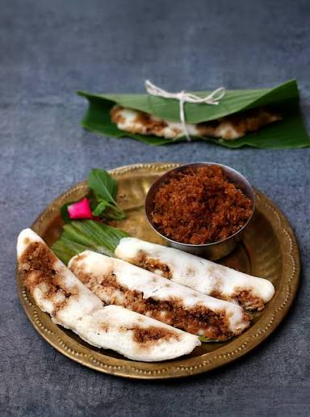

Prathamastami Festival — Odia Rice Cake
Enduri Pitha
ଏଣ୍ଡୁରୀ ପିଠା / ହଳଦୀ ପତ୍ର ପିଠା
"ଅରୋଗ୍ୟ ଦୀର୍ଘ ଜୀବ ତ୍ୱଂ — ପ୍ରଥମ ଜ ପ୍ରଥମ ପୂଜ୍ୟ"
"May the firstborn be blessed with health and long life — the first is always the most revered."
— Prathamastami blessing, Odia oral tradition
Enduri Pitha is made once a year during Prathamastami — a festival honouring the firstborn child of every family. A fermented batter of rice and urad dal is spread on fresh turmeric leaves, filled with a sweet coconut-jaggery-chhena stuffing, folded and steamed. The turmeric leaf infuses the pitha with its rare earthy fragrance. Also offered as Sakala Dhupa prasad at the Jagannath temple.
Ingredients
- 1½ cups raw rice (arua chaula)
- 1 cup urad dal (black gram, skinless)
- Salt to taste
- Fresh green turmeric leaves (haladi patra) — 10–12
- For filling:
- 1 cup grated fresh coconut
- 100 g chhena (cottage cheese)
- 150 g jaggery (guda)
- ½ tsp green cardamom, ground
- 4–5 black peppercorns, crushed (optional)
- Ghee, for greasing leaves
Instructions
Wash rice twice and soak for 4 hours. Wash urad dal and soak separately for 4 hours. Grind the urad dal into a smooth, fluffy batter. Grind the rice into a slightly coarser paste. Mix both batters together, add salt, and let the combined batter ferment at room temperature for 5–6 hours. In summer it ferments faster.
Prepare the filling: in a pan on medium flame, add jaggery and grated coconut together. Stir continuously until the jaggery melts and the mixture becomes slightly dry and golden — about 5–7 minutes. Add chhena, cardamom, and crushed pepper. Mix well. Remove from heat and cool completely. The filling must be cool before assembling — warm filling makes the batter slide off the leaf.
Wash the fresh turmeric leaves carefully and pat dry. Lightly grease the shiny inside surface of each leaf with a tiny bit of ghee.
Spread a thin layer of the fermented batter lengthwise along the centre of the greased leaf. Add a spoonful of filling along the middle of the batter. Fold the leaf naturally along its spine so the two halves of batter meet and enclose the filling. The pitha should be long and finger-shaped.
Set up a steamer with simmering water. Arrange the folded leaf parcels in the steamer without overlapping. Cover tightly. Steam on medium heat for 15–20 minutes. Do not lift the lid in the first 10 minutes. Insert a toothpick — it should come out clean when done.
Remove from the steamer and let it rest for 5 minutes. Carefully peel away the turmeric leaf. The pitha will have absorbed the leaf's fragrance entirely. Serve warm with potato curry (alu kasa) or rice kheer.